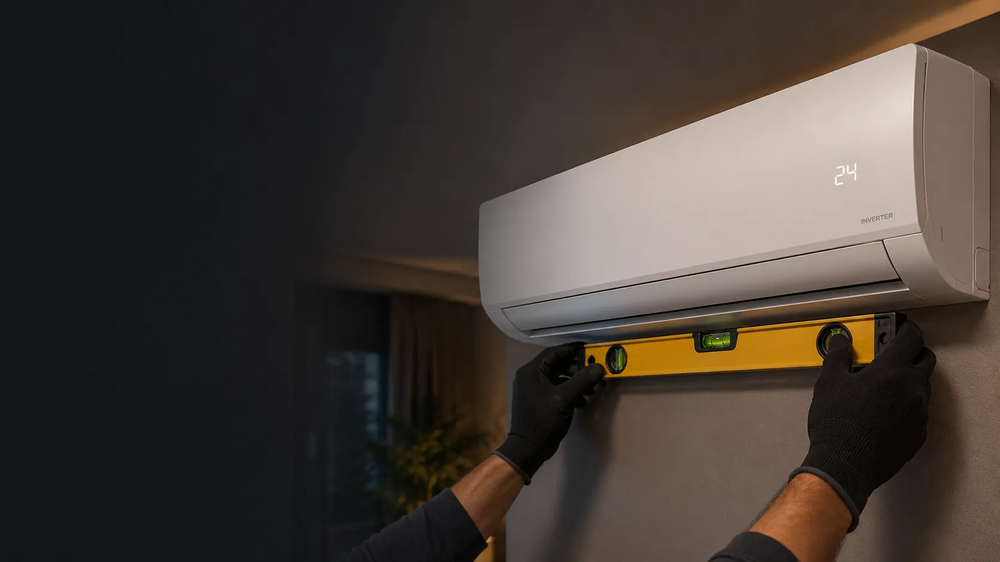

Climatização residencial e comercial
Climatização técnica em Maringá e região
Instalação, manutenção e higienização de ar‑condicionado para quem valoriza organização, cuidado no ambiente e atenção ao acabamento. Atendimento em Maringá, Sarandi e Marialva.
Serviços de climatização
Serviços de ar‑condicionado com padrão técnico
Atendimento técnico para equipamentos split em casas, apartamentos, lojas, escritórios e empresas.

01
Instalação de ar-condicionado
Planejamento da instalação, fixação, passagem organizada, testes e orientação sobre o equipamento.
Conhecer o serviço de instalação
02
Manutenção de ar-condicionado
Avaliação do equipamento para identificar falhas, perda de desempenho, vazamentos, ruídos e outros problemas.
Conhecer o serviço de manutenção
03
Higienização de ar-condicionado
Limpeza técnica para remover sujeira acumulada, reduzir odores e melhorar o conforto e a qualidade do ar no ambiente.
Conhecer o serviço de higienizaçãoMétodo de trabalho
Um processo técnico do diagnóstico à entrega
Cada atendimento segue uma sequência clara: entender o problema, preparar o ambiente, executar o serviço e conferir o resultado. Isso reduz improvisos, retrabalho e transtornos para o cliente.
Falar com a ClimiumDiagnóstico da necessidade
O equipamento, o ambiente e os sintomas são analisados antes de definir a intervenção adequada.
Preparação para o serviço
A área de trabalho é organizada e protegida para preservar piso, móveis, paredes e circulação.
Execução com procedimento
Ferramentas adequadas e etapas técnicas ajudam a manter o serviço limpo, seguro e bem-acabado.
Conferência e entrega
O funcionamento é testado e o cliente recebe orientações sobre uso, limpeza e próximos cuidados.
Atendimento local
Atendimento em Maringá, Sarandi e Marialva
A Climium atende clientes residenciais e comerciais nas três cidades, com páginas específicas para cada região e serviço.
Sinais de atenção
Sinais de que seu ar‑condicionado precisa de atenção
Alguns sinais indicam sujeira, falha de funcionamento ou necessidade de manutenção. Evitar o uso prolongado pode reduzir o risco de danos maiores.
Como funciona
Um atendimento simples, do contato aos testes finais
-
1
Contato
Você explica a necessidade e envia informações do equipamento.
-
2
Avaliação inicial
A Climium analisa o serviço e orienta sobre os próximos passos.
-
3
Agendamento
O atendimento é combinado conforme disponibilidade e local.
-
4
Execução e testes
O serviço é realizado com organização, conferência e orientação.
Perguntas frequentes
Respostas rápidas antes de solicitar atendimento
Respostas diretas para ajudar você a entender os serviços e o atendimento da Climium.
Quais cidades a Climium atende?
A Climium atende Maringá, Sarandi e Marialva, conforme o tipo de serviço e a disponibilidade de agenda.
Vocês atendem residências e empresas?
Sim. O atendimento inclui casas, apartamentos, lojas, escritórios e outros ambientes comerciais.
Vocês trabalham com split inverter?
Sim. A Climium atende equipamentos split convencionais e split inverter.
Como solicitar atendimento?
Entre em contato pelo WhatsApp e informe a cidade, o tipo de serviço e, quando possível, o modelo ou a capacidade do equipamento.
Atendimento Climium
Seu ar‑condicionado precisa de atendimento?
Fale diretamente com a Climium e receba uma orientação inicial sobre o serviço.